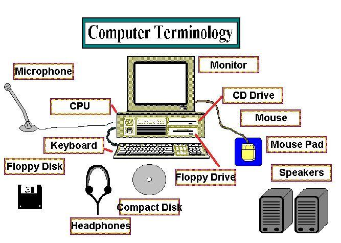

Computer study terminology

- File
- a file is a logical collection of information stored under a single name.
- Information
- words, numbers pictures, and sounds which have meaning to us.
- Directory
- a logical collection of files stored under a single name.
- JPEG
- JPEG is a commonly used method of lossy compression for digital images, particularly for those images produced by digital photography. The degree of compression can be adjusted, allowing a selectable tradeoff between storage size and image quality. JPEG typically achieves 10:1 compression with little perceptible loss in image quality.
- GIF
- The Graphics Interchange Format is a bitmap image format that was developed by US-based software writer Steve Wilhite while working at the internet service provider CompuServe in 1987[1] and has since come into widespread usage on the World Wide Web due to its wide support and portability.
- PNG
- Portable Network Graphics is a raster graphics file format that supports lossless data compression. PNG was created as an improved, non-patented replacement for Graphics Interchange Format (GIF), and is the most widely used lossless image compression format on the Internet.
- PDF
- The Portable Document Format (PDF) is a file format used to present documents in a manner independent of application software, hardware, and operating systems.[2] Each PDF file encapsulates a complete description of a fixed-layout flat document, including the text, fonts, graphics, and other information needed to display it.